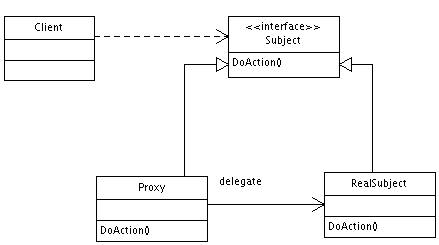

前言
在介绍代理模式之前，先说一下两个词：代理(proxy)、委托(delegate)，这两个词非常容易让人搞错，其中代理是名称，它说明了若干个对象实现了一个共同的接口；委托是动词，它说明了一个对象引用了另一个对象，并不涉及到接口。
委托模式
委托模式：有两个对象参与处理同一个请求，接受请求的对象将请求委托给另一个对象来处理，它使得我们可以用 聚合 来代替继承。
委托是一种对类的功能进行扩展和复用所采取的方式，使用范围比继承更加普遍。
示例
class RealPrinter { // the "delegate"
void print() {
System.out.print("something");
}
}
class Printer { // the "delegator"
RealPrinter p = new RealPrinter(); // create the delegate
void print() {
p.print(); // delegation
}
}
public class Main {
// to the outside world it looks like Printer actually prints.
public static void main(String[] args) {
Printer printer = new Printer();
printer.print();
}
}
代理模式
定义
代理模式：对其他对象提供一种代理以控制对这个对象的访问。

它的作用是：在某些情况下，一个对象不想或者不能直接引用另一个对象，而且代理对象可以在调用者和目标对象直接起到中介的作用。
代理模式又可以分为：
- 静态代理：由人或者工具生成源代码，在运行前就已经存在.class文件。
- 动态代理：程序运行过程中，通过反射机制创建而成。
代理模式涉及到的三个角色：
- 抽象接口：
- 委托类：
- 代理类：
静态代理-示例
代理模式最常见的应用就是aop拦截器
public class StaticProxyPattern {
public static void main(String[] args) {
IService print = new PrintService();
IService proxy = new ProxyService(print);
proxy.execute();
}
}
//抽象接口
interface IService{
void execute();
}
//委托类
class PrintService implements IService{
@Override
public void execute() {
System.out.println("进行打印");
}
}
//代理类
class ProxyService implements IService{
private IService service;
public ProxyService(IService service){
this.service = service;
}
@Override
public void execute() {
doBefore();
service.execute();
doAfter();
}
private void doBefore(){
System.out.println("before");
}
private void doAfter(){
System.out.println("after");
}
}
动态代理-示例
public class DynamicProxyPattern {
public static void main(String[] args) {
IService print = new PrintService();
IService proxy = Proxyfactory.getService(print);
proxy.execute();
}
}
class Proxyfactory{
public static IService getService(final IService service){
InvocationHandler inovcationHandler = new InvocationHandler(){
@Override
public Object invoke(Object proxy, Method method, Object[] args)
throws Throwable {
doBefore();
Object result = method.invoke(service, args);
doAfter();
return result;
}
};
return (IService) Proxy.newProxyInstance(IService.class.getClassLoader(),new Class[]{IService.class}, inovcationHandler);
}
public static void doBefore(){};
public static void doAfter(){};
}
日期：2014-03-28
参考资料：委托模式、iOS中 Proxy和的delegate区别、代理（Proxy）和委派（Delegate）的区别、模式：委托模式、代理模式